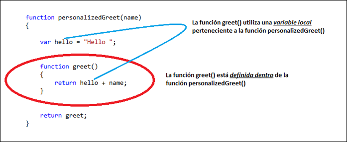

lunes, 29 de octubre de 2012
Blogger invitado
Óscar Sotorrío Sánchez
Desarrollador independiente, MCP C#
Eterno aprendiz en esto de las tecnologías .NET y en especial con ASP.NET. Admirador de la filosofía de Internet y entusiasta de los nuevos modelos de negocio que rigen este mundillo. Blog: oscarsotorrio.comEn este artículo vamos a comenzar por identificar en el código cuándo se producen los closures para luego ver qué tienen de especial. Después pasaremos a ver algunos comportamientos que nos servirán para terminar completamente de entender cómo funcionan. Para finalizar, veremos un par de ejemplos de aplicaciones prácticas.
Concepto
Cuando nos acercamos por primera vez al concepto de closure es habitual encontrarnos con problemas a la hora de entenderlo, a pesar de que seguramente en muchas ocasiones los habremos utilizado sin saberlo. Por este motivo, antes de intentar dar una definición más o menos académica, creo que es mucho más práctico saber identificar los closures en el código, que al fin y al cabo es el lenguaje natural del programador.
{kind=link}
Identifiquemos los elementos que se producen en el código anterior.
- En primer lugar podemos ver claramente que tenemos dos funciones, y que la función
greet()está definida dentro de la funciónpersonalizedGreet(). - En segundo lugar podemos observar como la función
greet()utiliza en su cuerpo una variable local perteneciente al ámbito de la funciónpersonalizedGreet().
1 2 3 4 5 6 7 8 9 | //En otra parte del código...var sayHello = personalizedGreet("Óscar"); /* Se almacena en la variable sayHello el código: function greet() { return hello + name; } */alert(sayHello()); // Se ejecuta el código anterior y // se muestra en pantalla: Hello Óscar |
Debemos comentar aquí que la apariencia más habitual de los closures es cuando utilizamos funciones anónimas, como en el siguiente ejemplo:
1 2 3 4 5 6 7 8 9 10 11 12 13 | function whatAreYouWritingAbout(){ var subject = "About Closures"; var message = function () { return subject; }; return message;}//En otra parte del código...var writingAbout = whatAreYouWritingAbout();alert(writingAbout()); //Muestra en pantalla: About Closures |
Acabamos de ver cómo identificar en el código cuando se producen los closures pero...¿qué tienen de particular?, ¿qué hace tan especial al código anterior?
Analicemos paso a paso lo que sucede supuestamente cuando se ejecuta la función
whatAreYouWritingAbout():- Comienza la ejecución de la función
whatAreYouWritingAbout(). - Se guarda en memoria una variable con el valor string
"About Closures". - Se guarda en memoria una variable con una referencia al código:
function () { return subject; }. - La función
whatAreYouWritingAbout()devuelve el código anterior. - Fin de la ejecución de la función
whatAreYouWritingAbout(). - Se llama al Garbage Collector para que elimine la variable
subject, dado que la función ha terminado y no la necesitará hasta su próxima ejecución, donde será otra vez definida y asignada.
1 2 | var writingAbout = whatAreYouWritingAbout();alert(writingAbout()); //Muestra en pantalla: About Closures |
Literalmente es como si estuviéramos escribiendo lo siguiente.
1 2 | var writingAbout = function () { return subject; };alert(writingAbout()); //Muestra en pantalla: About Closures |
Pero evidentemente, en este contexto o ámbito del código, la variable subject no existe (o está fuera de ámbito) y además su valor supuestamente fue destruido al salir de la función
whatAreYouWritingAbout(). Por lo tanto, cuando se ejecuta la función writingAbout() debería dar un error tipo Uncaught ReferenceError: subject is not defined. Sin embargo, el código muestra el mensaje correctamente...¿Por qué?.Cuando JavaScript encuentra en el código un closure le indica al Garbage Collector que no destruya las variables (están quedan guardadas o encerradas) que la función "interna" necesita para su correcta ejecución. Por lo tanto, a pesar de que las variables que esta función utiliza se encuentran en otro ámbito en el momento de su ejecución, JavaScript guardó una referencia al valor de las mismas y por lo tanto siempre están accesibles para la función. Podríamos decir que este es el secreto o la magia de los closures.
Comportamiento
Para terminar de captar el concepto veamos ahora una serie de comportamientos o características que tienen los closures y que tendremos que tener siempre presentes cuando trabajamos con esta potente herramienta del lenguaje JavaScript.Cómo se crean los closures
Cuando el intérprete de JavaScript encuentra un closure guarda las variables locales que las funciones internas van a necesitar. Esto ya lo hemos comentado, pero... ¿cómo acceden las funciones a estas variables? Veamos algunos apuntes sobre esto:- Cuando una variable local se almacena en memoria, si ésta cambia a lo largo de la función externa, en memoria se almacenará el último valor asignado al salir de la función externa.
- Cada función interna guarda una referencia a la posición de memoria donde se almacena la variable, pudiendo acceder a su valor.
{kind=link}
La idea principal es que el valor de la variable puede ser modificada a lo largo del código y que las funciones internas guardan una referencia a la memoria donde se encuentra el último valor de la variable que fue asignada al salir de la función externa. Es importante tener esto presente y, como veremos ahora, tiene algunos comportamientos que en principio podrían sorprender.
Definir o modificar la variable después de la función interna
En los ejemplos de código que hemos comentado anteriormente la variable local de la función externa se encontraba definida antes que la función anidada. Lo contrario es perfectamente válido.1 2 3 4 5 6 7 8 9 10 11 12 | function personalizedGreet(name){ var greet = function () { return hello + name; }; var hello = "Hello "; // Variable local definida después de la función anidada return greet;}//En otra parte del código...var greeting = personalizedGreet("Oscar");alert(greeting()); //Muestra en pantalla: Hello Oscar |
Como podemos observar no tiene ninguna influencia cuando es definida la variable local, la función interna guarda una referencia a la posición de memoria y utiliza el valor de la variable cuando la necesita. El lector puede leer más sobre este efecto y su importancia en el siguiente enlace: http://www.jasoft.org/Blog/post/Elevacion-de-variables-%28hoisting%29-en-JavaScript.aspx
Por cierto, en este ejemplo la función interna anónima utiliza realmente dos variables locales,
hello y name.
Los parámetros de la función externa son considerados lógicamente como
variables de este ámbito. Anteriormente se omitió este hecho para
simplificar el concepto y explicación.En el siguiente ejemplo tenemos una función que define en su interior una constante (con valor 10) que será incrementada una cantidad pasada como parámetro a la función:
1 2 3 4 5 6 7 8 9 10 11 | function constIncrease(amount){ var ten = 10; var codeFunc = function () { alert(ten); }; ten += amount; return codeFunc;}//En otra parte del código...var execute = constIncrease(5);execute(); |
Pensad por un momento cual será la salida en pantalla de este código, 10 ó 15. Los que hayáis respondido 15 estáis en lo cierto. Los que no, es normal, se tiende a pensar que el closure queda establecido en el comento que se define la función anidada, pero no es así. Como ya hemos comentado, la función interna simplemente almacena una referencia al último valor de la variable establecido cuando la función externa termina de ejecutarse.
Cada llamada es un closure distinto
Visto lo anterior podría pensarse que el closure es un elemento global que persiste entre llamadas. No es así, por cada llamada que hagamos a la función externa estaremos creando un nuevo e individual closure. Veamos el ejemplo siguiente.1 2 3 4 5 6 7 8 9 10 11 12 13 14 | function personalizedGreet(name) { var hello = "Hello "; return function () { alert(hello + name); };}//Creamos dos closures distintosvar greet1 = personalizedGreet("Pedro");var greet2 = personalizedGreet("María");greet1(); //Muestra en pantalla: Hello Pedrogreet2(); //Muestra en pantalla: Hello María |
Cuando tenemos varias funciones internas
Veamos ahora un ejemplo en el que varias funciones internas guardan una referencia a la misma variable local, o podríamos decir también que mantienen una referencia al mismo closure. En este ejemplo la función externa no devuelve ningún objeto, vamos almacenar las funciones internas en variables globales.1 2 3 4 5 6 7 8 9 10 11 12 13 14 15 16 17 18 19 | var gExecute1 = null;var gExecute2 = null;var gExecute3 = null;function createClosure() { var num = 10; gExecute1 = function () { alert(num); }; num++; gExecute2 = function () { alert(num); }; num = "¡¡Toma ya!!!" gExecute3 = function () { alert(num); };}createClosure();gExecute1();gExecute2();gExecute3(); |
Piense el lector por un momento cuál será la salida de este script. Efectivamente, la salida son tres mensajes seguidos con el texto "¡¡Toma ya!!". Notar que las tres funciones internas mantienen una referencia al mismo valor, es decir, las tres variables globales pertenecen al mismo closure. De hecho, este podría ser el caso del esquema que hemos visto en la imagen cuando hablábamos de como se crean los closures. Pero compliquemos el código un poco.
1 2 3 4 5 6 7 8 9 10 11 12 13 14 15 16 17 18 19 20 21 22 23 24 | var gExecute1 = null;var gExecute2 = null;var gExecute3 = null;function createClosure(){ var num = 10; gExecute1 = function () { alert(num); }; gExecute2 = function () { alert(++num); }; gClosure3 = function () { alert(num = "¡¡Toma ya!!!"); };}createClosure();gExecute1(); // Ejecuta el código: function () { alert(num); }; // --> Muestra en pantalla: 10gExecute2(); // Ejecuta el código: function () { alert(++num); }; // --> Muestra en pantalla: 11gExecute3(); // Ejecuta el código: function () { alert(num = "¡¡Toma ya!!!"); }; // --> Muestra en pantalla: ¡¡Toma ya!!!//¿Qué mostrará ahora la siguiente linea de código...?gExecute1(); |
Si volvemos a ejecutar el código de la función
gExecute1() obtenemos el mensaje "¡¡Toma ya!!". Esto es totalmente lógico porque esta función tiene una referencia al mismo closure que gExecute3() que fue la última función en modificar el closure que comparten.Toda variable puede pertenecer al closure
Debemos tener en cuenta que todo tipo de variable que se declare dentro del ámbito de la función externa y sea utilizada por la función anidada pertenecerá al closure. Esto puede dar algunos resultados inesperados por creación de closures no previstos. Por ejemplo, cuando ejecutamos bucles debemos prestar atención si dentro de la función interna utilizamos la variable contador del bucle: ésta es a todos los efectos una variable local de la función externa y por lo tanto pertenecerá al closure.1 2 3 4 5 6 7 8 9 10 11 12 13 14 15 16 17 18 19 20 21 22 23 24 | function testLoop(length){ var list = new Array(); for (var i = 0; i <= length; i++) { list[i] = "Item" + i; } return function () { alert("i = " + i + "\n" + "list[" + i + "] = " + list[i]); };}var execute = testLoop(5);execute();/*---Salida del programa--- i = 6; list[6] = undefined*/ |
Como podemos observar el contador también pertenece al closure y está disponible para la función interna fuera del ámbito de la función externa. Además, y aquí es cuando tenemos que tener cuidado, el último valor para esta variable es 6 porque el bucle ejecuta una vez más la instrucción
i++ para luego realizar la comprobación i <= length y salir del mismo.Aplicaciones prácticas
Ahora que seguramente que ya hemos entendido cómo se comportan los closures, pasemos a algo más práctico. En seguida vamos a ver algunos ejemplos donde podemos comprobar en el campo de batalla la potencia de esta característica del lenguaje. Tenga el lector en cuenta que aplicaciones sobre este concepto pueden haber tantas como las necesidades o imaginación de los programadores, aquí veremos solo algunas.Ejecutar funciones retardadas
Quizás este sea el ejemplo práctico más clásico y que el lector seguramente ya conocerá. En ocasiones en nuestro código JavaScript podemos necesitar realizar operaciones con retardo, para ello JavaScript nos provee de las funcionessetTimeout() y setInterval().Normalmente llamaremos a estas funciones pasándole como parámetros el nombre de la función a ejecutar y el tiempo de retardo en milisegundos. El problema a resolver es que sucede si la función que queremos ejecutar con retardo toma uno o más parámetros. En principio no tenemos forma de pasarle los parámetros a nuestra función dado que
setTimeout() y setInterval() sólo admiten el nombre de la función como primer parámetro. Esto es fácil de resolver con un closure.1 2 3 4 5 6 7 8 9 10 11 | function additionNumber(a, b){ return function () { alert(a + " + " + b + " = " + (a + b)); };}var execute = additionNumber(10, 40);setTimeout(execute, 3000); //Después de 3 segundos se muestra // en pantalla: 10 + 40 = 50 |
Acceso desde miembros privados a miembros públicos
En un artículo anterior cuando hablamos de las funciones constructoras comentamos que desde los métodos privados no podíamos tener acceso a las propiedades públicas del objeto creado. Retomando el ejemplo de código que vimos en aquel artículo veamos cómo saltarnos este pequeño escollo:1 2 3 4 5 6 7 8 9 10 11 12 13 14 15 16 17 18 19 20 21 22 23 24 25 26 27 28 29 30 | function Constructor(msjPrivado, msjPublico) { var propiedadPrivada = msjPrivado; this.propiedadPublica = msjPublico; var that = this; /* La variable 'that' será guardada en el closure para ser utilizada en su momento por la función metodoPrivado() */ var metodoPrivado = function () { alert(propiedadPrivada); alert(that.propiedadPublica); }; this.metodoPublico = function () { metodoPrivado(); };}var obj = new Constructor("mensaje privado", "mensaje público");obj.metodoPublico(); /* Muestra en pantalla dos mensajes seguidos: mensaje privado mensaje público*/ |
Personalizar eventos para objetos determinados del DOM
Supongamos que queremos encapsular en objetos del DOM la típica funcionalidad para que cuando el ratón se posicione sobre un elemento HTML éste cambie el texto de color y el estilo del puntero, mientras que cuando el ratón abandone el elemento, el texto y puntero vuelven a su estado anterior.1 2 3 4 5 6 7 8 9 10 11 12 13 14 15 16 17 18 19 20 21 22 23 24 25 26 27 28 29 30 31 32 33 34 | //Asocia un objeto a un evento personalizadofunction funcDelegate(obj, methodName) { // {1} return function (e) { e = e || window.event; return obj[methodName](this, e); // {2} };}//Crea un objeto y enlaza los eventos del DOM con los eventos personalizadosfunction DOMObject(id) { this._element = document.getElementById(id); if (this._element) { // {3} this._element.onmouseover = funcDelegate(this, "customOnMouseOver"); // {4} this._element.onmouseout = funcDelegate(this, "customOnMouseOut"); }}//Definimos el código de nuestros eventos personalizadosDOMObject.prototype.customOnMouseOver = function (obj, event) { obj.style.cursor = "pointer"; obj.style.color = "red";};DOMObject.prototype.customOnMouseOut = function (obj, event) { obj.style.cursor = "pointer"; obj.style.color = "black";};//Ahora podemos activar todo este mecanismo para distintos elementos de nuestra páginavar myDiv = new DOMObject("aDiv");var myButton = new DOMObject("aButton"); |
- Aquí es donde se produce el closure. Como se puede apreciar
la función interna guardará una referencia a un objeto pasado como
parámetro y al nombre de una función que en este caso será el nombre de
nuestro evento personalizado. Nótese una vez más, aquí simplemente se está creando el closure y devolviendo un código, que será ejecutado más tarde, parecido a:
objeto.eventoPersonalizado(elementoHTML, eventoDOM). Aunque este código se ejecute después, la función seguirá teniendo acceso al objeto y al valor de la cadena que representa el nombre del evento.
- Aunque la palabra reservada
thispueda parecer que se utiliza aquí, recordemos que en este momento sólo se crea el closure y se devuelve un código que será ejecutado a posteriori. En el momento de ejecutarte este código, cuando un evento del DOM se dispare (ej: onclick),thishará referencia al elemento HTML que dispara el evento del DOM.
- En este momento asignamos a los eventos del DOM que nos interese el código devuelto por
funcDelegate. Lo hemos mencionado antes, este código será del estilo:objeto.eventoPersonalizado(elementoHTML, eventoDOM). Por lo tanto, cuando se dispare un evento del DOM, como el onclick, estaremos llamando a una función que hace las veces de nuestro evento personalizado.
- Aquí
thishace referencia al objeto creado con la función constructoraDOMObject(id).
1 2 | var myDiv = new DOMObject("aDiv");myDiv.customOnClick(myDiv._element, null); |
Referencias
- Muy recomendable es la lectura del libro "Fundamentos de JavaScript y AJAX para desarrolladores y diseñadores web", en el que se puede encontrar una inteligente técnica para encapsular miembros de objetos por medio de closures además de ser un completísimo tratado sobre JavaScript.
- Si el lector quiere profundizar más sobre este concepto le recomiendo el siguiente enlace: http://dmitrysoshnikov.com/ecmascript/chapter-6-closures/
- Al final del siguiente enlace se utiliza un patrón por medio de closures para implementar propiedades privadas, públicas y con privilegios en objetos JavaScript: http://www.crockford.com/javascript/private.html
Autor: Óscar Sotorrío Sánchez
Publicado en Variable not found
Estos contenidos se publican bajo una licencia de Creative Commons

5 Comentarios:
Oscar, super-post!
Muy bien explicado y además se nota que te lo has preparado a conciencia.
Jose tiene que estar orgulloso de tan ilustre colaboración ;-)
Muchas gracias Sergio,
La verdad es que estás cosas efectivamente llevan su tiempo ;-)
Y José María también se lleva lo suyo por email debatiendo conmigo cual debe puede ser el enfoque más pedagógico y muchas otras cosas. Así que el que está orgulloso soy yo de colaborar con él. Siempre aprendo algo :-)
Hola Oscar:
Unas preguntas al respecto de tu artículo:
1. Yo digo que he hecho un "closure" sólo cuando la función externa ha finalizado su ejecución pero la función interna tiene que seguir teniendo acceso a variables de un ámbito superior. Es decir, sólo por utilizar una variable de un ámbito superior yo, personalmente, no hablo de "closure". Para mí tiene que haber vida de una función interna más allá de la vida de una función externa y con acceso a variables de un ámbito superior. Uff, espero haberme explicado. Sé que es un matiz muy tonto, pero ¿tú que opinas?
2. Lo cierto es que el garbage collector de JS... ahí está, tampoco he hecho ninguna aplicación con memory leaks "aparentes" pero me surge la duda ¿el garbage collector de JS es similar al de .NET? Es decir, cuando no haya referencias a la función interna desde fuera ¿se liberará entonces el closure?
Un saludo.
Hola Sergio,
1- No sé si te he entendido bien. Pero si te das cuenta apuntas dos elementos para que haya un closure.
"...tiene que haber vida de una función interna más allá de la vida de una función externa" y "con acceso a variables de un ámbito superior".
Al final, creo que es lo mismo que se ha comentado en el artículo pero dicho de otra forma. Es decir, formas de expresarlo puede haber muchas y seguro que mejores que la que se utiliza en el artículo, de hecho, como se comenta en el post, no se pretende dar una definición académica, solo que se entienda el concepto.
Aquí tienes otra forma de verlo hablando del verdadero ámbito de las variables.
http://www.jasoft.org/Blog/post/PermaLinkaspxguid=559517d8-9579-41bd-9e2c-36569dc.aspx
2- Buena pregunta :-)
Hasta donde yo llego en JavaScript la memoria se asigna a los objetos en su creación y es reclamado por el navegador cuando no hay más referencias a los mismos.
Aunque creo que depende un poco del explorador, por ejemplo, en Internet Explorer y Mozilla Firefox se utiliza el recuento de referencias para manejar la memoria de los objetos DOM.
Creo que la pregunta es buena y habría que ver como se relaciona todo esto con los closures. No me ha dado tiempo a leerlo pero parece interesante este artículo.
http://www.ibm.com/developerworks/web/library/wa-memleak/
Un saludo
Gracias por responder, Oscar.
Voy a leer los enlaces porque parecen interesante. Respecto a los closures estamos en línea, al final son definiciones similares. Y en cuanto a los memory-leak pues... a leer toca! ;-)
Enviar un nuevo comentario
Backlinks:
¡Bloguea sobre este tema!